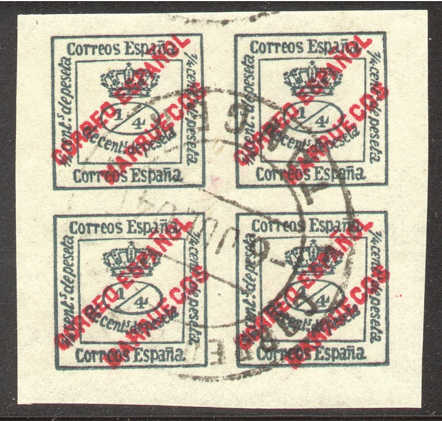
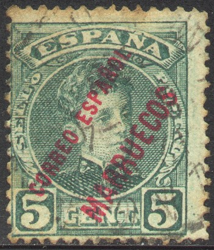
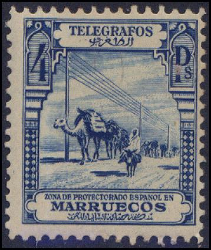

Marruecos - Maroc Espagnol - Spanisch Marokko
Return To Catalogue - Morocco - Morocco local issues
Note: on my website many of the
pictures can not be seen! They are of course present in the
catalogue;
contact me if you want to purchase it.
From 1903 on several stamps of Spain were overprinted with "CORREO ESPAGNOL MARRUECOS", "TETUAN", "TANGER", "PROTECTORADO ESPANOL EN MARRUECOS" or "MARRUECOS". In 1928 a first serie of stamps was issued with inscription "MARRUECOS".
4/4 c green (crown issue of 1876, red slightly different overprint) 2 c brown (red overprint) 5 c green (red overprint) 10 c red (blue overprint) 15 c violet (red overprint) 20 c black (red overprint) 25 c blue (red overprint) 30 c green (red overprint) 40 c red (blue overprint) 50 c blue (red overprint) 1 P red (blue overprint) 4 P violet (red overprint) 10 P orange (blue overprint)
Value of the stamps |
|||
vc = very common c = common * = not so common ** = uncommon |
*** = very uncommon R = rare RR = very rare RRR = extremely rare |
||
| Value | Unused | Used | Remarks |
| 4/4 c | c | c | |
| 2 c | * | * | |
| 5 c | * | * | |
| 10 c | * | * | |
| 15 c | *** | *** | |
| 20 c | *** | *** | |
| 25 c | * | * | |
| 30 c | *** | *** | |
| 40 c | *** | *** | |
| 50 c | *** | ** | |
| 1 P | *** | ** | |
| 4 P | *** | *** | |
| 10 P | RR | RR | |
With further overprint 'TETUAN' (1908)


4/4 c green 5 c green 10 c red 25 c blue
Value of the stamps |
|||
vc = very common c = common * = not so common ** = uncommon |
*** = very uncommon R = rare RR = very rare RRR = extremely rare |
||
| Value | Unused | Used | Remarks |
| 4/4 c | *** | *** | |
| 5 c | R | R | |
| 10 c | R | R | |
| 25 c | R | R | |

The forged cancel "TANGER 2? ?E 04 MARRUECOS" can be
found in the Fournier Album. Here with a forged cancel from Timor
and one from Portuguese Guinea.
4/4 c green (different type, crown issue of Spain of 1876) 2 c brown 5 c green 10 c red 15 c violet 20 c black 25 c blue
Value of the stamps |
|||
vc = very common c = common * = not so common ** = uncommon |
*** = very uncommon R = rare RR = very rare RRR = extremely rare |
||
| Value | Unused | Used | Remarks |
| 4/4 c | ** | ** | |
| 2 c | R | R | |
| 5 c | R | *** | |
| 10 c | R | *** | |
| 15 c | RR | RR | |
| 20 c | RR | RR | |
| 25 c | RR | RR | |
2 c grey (red overprint) 5 c green (red overprint) 10 c red (blue overprint) 15 c violet (red overprint) 20 c green (red overprint) 25 c blue 30 c green 40 c red 50 c blue (red overprint) 1 P red 4 P lilac 10 P orange
Value of the stamps |
|||
vc = very common c = common * = not so common ** = uncommon |
*** = very uncommon R = rare RR = very rare RRR = extremely rare |
||
| Value | Unused | Used | Remarks |
| 2 c | c | c | |
| 5 c | * | c | |
| 10 c | * | c | |
| 15 c | *** | ** | |
| 20 c | *** | ** | |
| 25 c | RR | RR | |
| 30 c | * | * | |
| 40 c | ** | * | |
| 50 c | ** | * | |
| 1 P | *** | ** | |
| 4 P | RR | RR | |
| 10 P | RR | RR | |
4/4 c green (crown stamp of 1876, red overprint) On 1909 stamps of Spain 2 c grey (red overprint) 5 c green (red overprint) 10 c red (blue overprint) 15 c violet (red overprint) 20 c green (red overprint) 25 c blue (red overprint) 30 c green (red overprint) 40 c red (blue overprint) 50 c blue (red overprint) 1 P red (blue overprint) 4 P lilac (red overprint) 10 P orange (blue overprint) On express stamp of 1905 (Correspondencia Urgente) 20 c orange (blue overprint)
Value of the stamps |
|||
vc = very common c = common * = not so common ** = uncommon |
*** = very uncommon R = rare RR = very rare RRR = extremely rare |
||
| Value | Unused | Used | Remarks |
| 4/4 c | * | * | |
| 2 c | * | * | |
| 5 c | * | * | |
| 10 c | * | * | |
| 15 c | *** | *** | |
| 20 c | *** | *** | |
| 25 c | *** | *** | |
| 30 c | *** | *** | |
| 40 c | *** | *** | |
| 50 c | *** | *** | |
| 1 P | *** | *** | |
| 4 P | R | R | |
| 10 P | RR | RR | |
| 20 c | R | R | Express stamp |
Several stamps exist with inverted overprint (all R), example:
4/4 c green (crown stamp of 1876, red overprint) On 1909 stamps of Spain 2 c grey (red overprint) 5 c green (red overprint) 10 c red (blue overprint) 15 c violet (red overprint) 20 c green (red overprint) 25 c blue (red overprint) 30 c green (red overprint) 40 c red (blue overprint) 50 c blue (red overprint) 1 P red (blue overprint) 4 P lilac (red overprint) 10 P orange (blue overprint) Surcharged and bisected '10 centesimos' on half of 20 c green '15 centesimos' on half of 30 c On express stamp of 1905 (Correspondencia Urgente)
20 c orange (blue overprint) '10 centesimos' on half of 20 c orange '10 Cts.' on '10 centesimos' on half of 20 c orange
Value of the stamps |
|||
vc = very common c = common * = not so common ** = uncommon |
*** = very uncommon R = rare RR = very rare RRR = extremely rare |
||
| Value | Unused | Used | Remarks |
| 4/4 c | * | * | |
| 2 c | * | * | |
| 5 c | * | * | |
| 10 c | * | * | |
| 15 c | *** | *** | |
| 20 c | *** | *** | |
| 25 c | *** | *** | |
| 30 c | *** | ** | |
| 40 c | *** | ** | |
| 50 c | *** | *** | |
| 1 P | *** | *** | |
| 4 P | R | R | |
| 10 P | RR | RR | |
| 20 c | *** | *** | Express stamp |
| 10 c on 20 c | *** | *** | Express stamp |
| 10 c on 10 c on 20 c | RR | RR | Express stamp |
| 10 c on 20 c | *** | *** | |
| 10 c on 30 c | R | R | |

4/4 c green (crown stamp of 1876, red overprint) 1 c green (crown stamp of 1920, red overprint) On 1909 stamps of Spain 2 c grey (red overprint) 5 c green (red overprint) 10 c red (blue overprint) 15 c violet (red overprint) 15 c yellow (blue overprint) 20 c green (red overprint) 20 c violet (red overprint) 25 c blue (red overprint) 30 c green (red overprint) 40 c red (blue overprint) 50 c blue (red overprint) 1 P red (blue overprint) 4 P lilac (red overprint) 10 P orange (blue overprint) On express stamp 20 c orange
Value of the stamps |
|||
vc = very common c = common * = not so common ** = uncommon |
*** = very uncommon R = rare RR = very rare RRR = extremely rare |
||
| Value | Unused | Used | Remarks |
| 4/4 c | * | * | |
| 1 c | c | c | 1921? |
| 2 c | * | c | |
| 5 c | * | c | |
| 10 c | * | c | |
| 15 c violet | RR | ? | |
| 15 c yellow | ** | c | |
| 20 c green | RR | ? | |
| 20 c violet | *** | * | |
| 25 c | ** | * | |
| 30 c | ** | * | |
| 40 c | *** | *** | |
| 50 c | *** | * | |
| 1 P | *** | *** | |
| 4 P | *** | *** | |
| 10 P | RR | RR | |
| 20 c | ** | ** | Express stamp, 1923 |
5 c on half of 5 P (red overprint) 5 c on half o f 10 P (red overprint) 10 c on half of 25 P (red overprint) 10 c on half of 50 P (red overprint) 15 c on half of 100 P (green overprint) 15 c on half of 500 P (green overprint)
Value of the stamps |
|||
vc = very common c = common * = not so common ** = uncommon |
*** = very uncommon R = rare RR = very rare RRR = extremely rare |
||
| Value | Unused | Used | Remarks |
| 15 c on half of 5 P | *** | *** | |
| 15 c on half of 10 P | ** | ** | |
| 10 c on half of 25 P | ** | ** | |
| 10 c on half of 50 P | ** | ** | |
| 15 c on half of 100 P | ** | *** | |
| 15 c on half of 500 P | *** | *** | |

1 c green (crown stamp of 1920) 15 c yellow 20 c violet

Express delivery stamp of 1928
Some telegraph stamps of Spain were overprinted 'PROTECTORADO ESPANOL EN MARRUECOS' or 'ZONA DE PROTECTORADO ESPANOL EN MARRUECOS' from 1916 to 1927.

4 P blue telegraph stamp of 1928
5 c brown, 10 c black, 30 c orange, 50 c red, 1 P blue, 4 P blue, 10 P brown.
Stamps - Briefmarken - Timbres-Poste - Postzegels - Francobolli - Estampillas


{kind=link}
{kind=link}
{kind=link}
{kind=link}
{kind=link}